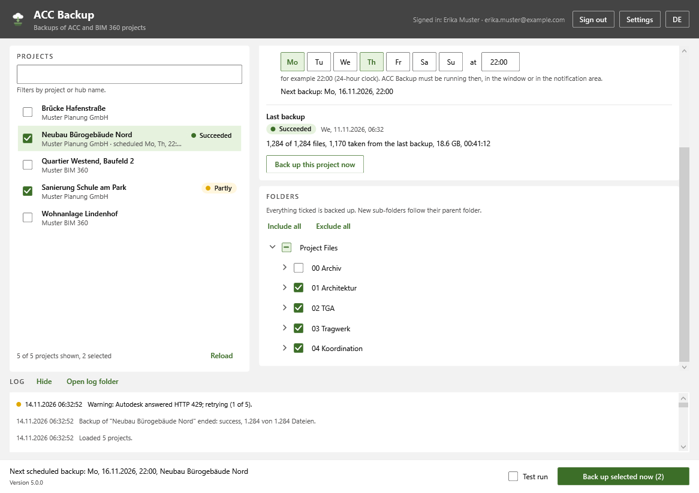
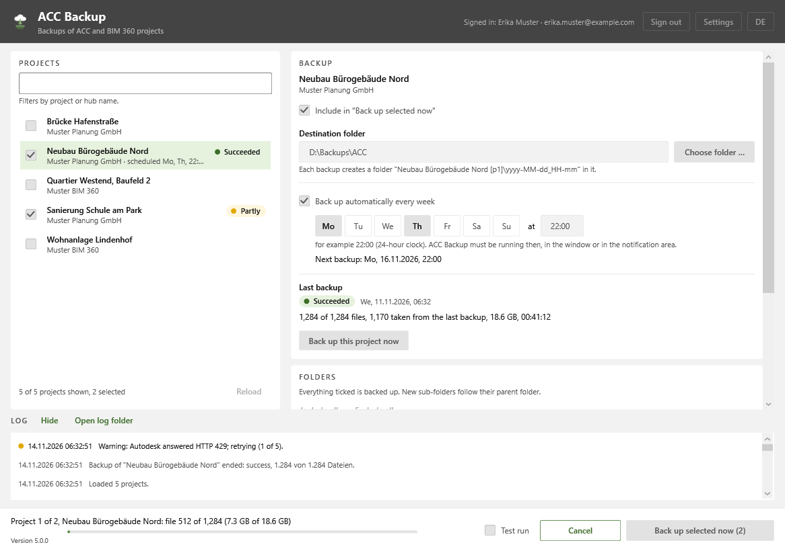
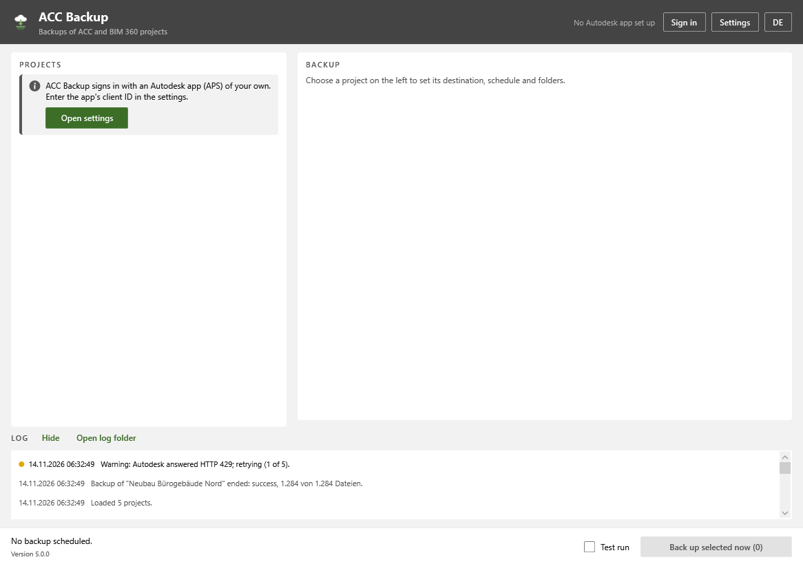
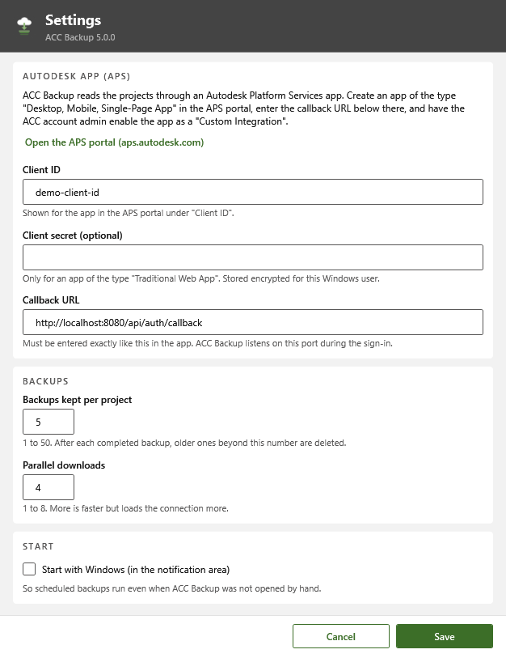

ACC Backup
Stored in the cloud is not the same as backed up.
- C#
- .NET 8
- WPF
- Autodesk Platform Services (PKCE)
- Data Management API
Many construction teams keep all their project files in Autodesk Construction Cloud, an online document platform. If a folder is deleted there or a subscription ends, the files can be lost. ACC Backup copies selected projects to a local drive every week and retains the most recent copies.
The problem
Projects in Autodesk Construction Cloud appear safe because they are stored in the cloud. A deleted folder or an expired subscription can nevertheless remove years of work.
The solution
ACC Backup keeps dated copies of ACC and BIM 360 projects on a local or network drive. The user selects the projects and folders, a destination and a weekly time. ACC Backup downloads the latest version of every document and retains the most recent backups. The interface is available in German and English.
Only changes are downloaded. If a document has not changed since the last backup, ACC Backup links to the earlier copy instead of downloading it again (a file-system feature known as a hard link). Later runs are therefore fast, and five backups do not require five times the space. A run counts as a backup only once its complete file list has been written, so a crash or power failure cannot leave an incomplete folder that appears complete.
Sign-in uses PKCE, so no secret key is stored in the program. If ACC Backup was closed when a backup was due, the backup runs at the next start, and a failed run is retried after 15 minutes, 1 hour and 4 hours.
Features
- Choose ACC and BIM 360 projects, folders and a destination; the latest version of every document is saved under its ACC name
- One dated folder per project and run, with a report and a list of every file and its ACC version
- Unchanged documents are linked to the previous backup instead of downloaded again
- Keeps the last few backups per project (5 by default) and never deletes anything after a run that had failures
- A run only becomes a backup once its file list is written; failed and cancelled runs are kept and labelled
- Include or leave out any folder; new folders follow the choice made for their parent folder
- Weekly schedule on any days and time, running from the Windows notification area and optionally starting with Windows
- Missed backups run at the next start; failed ones are retried after 15 minutes, 1 hour and 4 hours
- Secure sign-in (PKCE) with no secret key shipped in the program; an optional key is stored encrypted for the Windows user
- 1 to 8 downloads at once, a test run that downloads nothing, and daily logs
- German and English interface
Glossary
- BIM
- Building Information Modelling: designing a building as a shared 3D model that also holds data about every part, instead of separate drawings.
- ACC / BIM 360
- Autodesk Construction Cloud, an online platform where project teams store and share models and documents. BIM 360 is the older version.
Gallery
Screenshots and demonstrations




